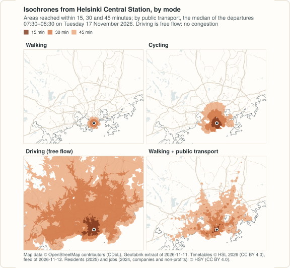

peabiru reads any OpenStreetMap extract and any valid GTFS feed; nothing in it is particular to Brazil. This example builds the network of the Helsinki capital region (Helsinki, Espoo, Vantaa and Kauniainen, 1.25 million residents on HSY’s grid) from open data, and measures access to jobs by public transport at the morning peak.
Why Helsinki. The city abroad was chosen by its data: one official GTFS feed for every mode of the region (HSL’s buses, trams, metro, commuter trains and ferries), current, under an explicit open licence (CC BY 4.0); and residents and jobs on a 250 m grid, also under CC BY 4.0, from the region’s own environmental services authority (HSY). Of the other candidates, Lisbon has hills that would have made an elevation example, but the current feeds of its core, Metro de Lisboa’s and Carris’s, are listed without a licence in the Mobility Database catalogue (as downloaded on 2026-11-12; the catalogue gives CC0 only for older copies, now deprecated, from the Transporlis portal), so it was dropped rather than used on an assumption. Bogotá, Mexico City and Montréal were not examined once Helsinki met every requirement. Helsinki’s terrain is gentle, and this example models no elevation.
The output shown is what the code printed; it was computed on 2026-11-12. The same steps in Python are in the Python example.
The data
| Data | Source | Licence |
|---|---|---|
| Streets |
OpenStreetMap,
extract of Finland by Geofabrik,
dated 2026-11-11 (776 MB, MD5
ff7c5c52ce53880611989d15378b13af), cut with osmium to the
box 24.45–25.30° E, 60.03–60.42° N |
ODbL 1.0 |
| Public transport |
HSL (Helsinki Region
Transport), GTFS feed
https://infopalvelut.storage.hsldev.com/gtfs/hsl.zip,
published 2026-11-12 05:42 (feed_version), valid 2026-11-11 to
2027-01-09, downloaded on 2026-11-12 (88 MB, SHA-256
1cd6f532…7223c); the feed is replaced every day |
CC BY 4.0 (HSL’s open data terms); © HSL 2026 |
| Residents | HSY (Helsinki Region Environmental Services), Väestötietoruudukko
2025, residents on a 250 m grid (HSY’s page of the dataset: updated
2026-07-08), from HSY’s open WFS kartta.hsy.fi
|
CC BY 4.0, © HSY |
| Jobs | HSY, Työpaikkaruudukko 2024, jobs (full-time equivalents) on a 250 m grid (updated 2026-08-26), same WFS | CC BY 4.0, © HSY; original source: Statistics Finland’s Business Register |
Three things to know about the grids, each visible in the numbers below.
- Residents. Cells with fewer than five residents are left out of HSY’s population grid. One of its 5,826 cells is not a place: HSY puts the residents it cannot assign to a building in a cell in the sea, at the south-east corner of the grid, and in 2025 that cell holds 33,575 people, 2.6% of the total. It is left out here; routed as an origin it would count as 33,575 residents who reach no job.
-
Jobs. The job grid counts jobs in companies and
non-profit organisations only, not public-sector jobs
(schools, hospitals, the administration), as full-time equivalents, and
gives
-1for cells with three or fewer employees, which are counted as 0 here. So “jobs” below are private and third-sector jobs, a lower bound. - Coverage. The job grid covers the wider Helsinki region, 572,915 jobs; the box of this example keeps the capital region, 486,976 of them. Of the rest, 43,423 are in the outer municipalities and 42,516 are in cells in the sea, south of the box (near 59.94° N, 25.23° E), where HSY puts the establishments without a location.
library(peabiru)
library(sf)
root <- Sys.getenv("PEABIRU_EXAMPLE_DATA", "example-data")
raw <- file.path(root, "raw")
data_dir <- file.path(root, "helsinki")
dir.create(raw, recursive = TRUE, showWarnings = FALSE)
options(timeout = 3600) # the extract of Finland is 776 MB
fetch <- function(url, name = basename(url)) {
dest <- file.path(raw, name)
if (!file.exists(dest)) download.file(url, dest, mode = "wb", quiet = TRUE)
dest
}
finland <- fetch("https://download.geofabrik.de/europe/finland-261111.osm.pbf")
stopifnot(tools::md5sum(finland) == "ff7c5c52ce53880611989d15378b13af")
hsl <- fetch("https://infopalvelut.storage.hsldev.com/gtfs/hsl.zip")
hsy <- paste0("https://kartta.hsy.fi/geoserver/wfs?service=WFS&version=2.0.0",
"&request=GetFeature&outputFormat=application/json&srsName=EPSG:4326",
"&typeNames=asuminen_ja_maankaytto:")
residents_file <- fetch(paste0(hsy, "Vaestotietoruudukko_2025"), "Vaestotietoruudukko_2025.geojson")
jobs_file <- fetch(paste0(hsy, "Tyopaikkaruudukko_2024"), "Tyopaikkaruudukko_2024.geojson")The network
The streets: the capital region and a margin, cut from the extract of
Finland. The timetables: HSL’s feed holds two months of service, and its
stop_times.txt alone is 1.1 GB uncompressed. Routing one
weekday morning needs the trips of that day only, so the feed is cut to
the trips that run on Tuesday 17 November 2026 and the rows of the other
tables they use. The cut copies those rows unchanged (it changes no
value), keeps every stop, and leaves out the tables peabiru does not
read (translations, areas): in the hours analysed the network routes
that day as one built from the whole feed would (that equality was not
run here: the whole feed was not loaded; trips of Monday’s service still
running after midnight are not in the cut), with 681,718 rows of
stop_times.txt instead of two months of them.
dir.create(file.path(data_dir, "network"), recursive = TRUE, showWarnings = FALSE)
status <- system2("osmium", c("extract", "--overwrite", "-s", "smart",
"-b", "24.45,60.03,25.30,60.42", finland,
"-o", file.path(data_dir, "network", "helsinki.osm.pbf")))
stopifnot(status == 0)
# the trips of a GTFS feed that run on `date`, and the rows of the other
# tables that belong to them, copied line by line
gtfs_one_day <- function(src, date, out) {
day <- c("sunday", "monday", "tuesday", "wednesday", "thursday", "friday",
"saturday")[as.POSIXlt(as.Date(date, "%Y%m%d"))$wday + 1]
table <- function(name) read.csv(unz(src, name), colClasses = "character",
check.names = FALSE, fileEncoding = "UTF-8-BOM")
cal <- table("calendar.txt")
active <- cal$service_id[cal$start_date <= date & cal$end_date >= date & cal[[day]] == "1"]
cd <- table("calendar_dates.txt")
cd <- cd[cd$date == date, ]
active <- union(setdiff(active, cd$service_id[cd$exception_type == "2"]),
cd$service_id[cd$exception_type == "1"])
trips <- table("trips.txt")
trips <- trips[trips$service_id %in% active, ]
keep <- list(trips.txt = c("trip_id", trips$trip_id), stop_times.txt = c("trip_id", trips$trip_id),
routes.txt = c("route_id", unique(trips$route_id)),
shapes.txt = c("shape_id", unique(trips$shape_id)),
calendar.txt = c("service_id", active), calendar_dates.txt = c("service_id", active))
tables <- intersect(c("agency.txt", "stops.txt", "routes.txt", "trips.txt", "stop_times.txt",
"calendar.txt", "calendar_dates.txt", "frequencies.txt", "transfers.txt",
"shapes.txt", "feed_info.txt", "fare_attributes.txt", "fare_rules.txt"),
unzip(src, list = TRUE)$Name)
tmp <- tempfile()
dir.create(tmp)
for (name in tables) {
con <- unz(src, name, open = "rb")
to <- file(file.path(tmp, name), "wb")
header <- readLines(con, n = 1)
writeLines(header, to)
k <- keep[[name]]
col <- if (is.null(k)) NA else match(k[1], strsplit(sub("^", "", sub("\r$", "", header)), ",")[[1]])
repeat {
lines <- readLines(con, n = 500000)
if (length(lines) == 0) break
if (!is.na(col)) {
key <- read.csv(text = lines, header = FALSE, colClasses = "character")[[col]]
stopifnot(length(key) == length(lines)) # no line breaks inside fields
lines <- lines[key %in% k[-1]]
}
writeLines(lines, to)
}
close(con)
close(to)
}
out <- file.path(normalizePath(dirname(out)), basename(out))
unlink(out)
old <- setwd(tmp)
on.exit(setwd(old))
stopifnot(zip(out, tables, flags = "-q9X") == 0)
c(services = length(active), trips = nrow(trips))
}
gtfs_one_day(hsl, "20261117", file.path(data_dir, "network", "hsl.zip"))
#> services trips
#> 509 24083
get_gtfs_errors(file.path(data_dir, "network"))
#> # A tibble: 0 × 6
#> # ℹ 6 variables: file <lgl>, line <lgl>, type <lgl>, field <lgl>, id <lgl>,
#> # priority <lgl>
threads <- 4 # of this laptop's ten cores
build_time <- system.time(
network <- build_network(file.path(data_dir, "network"), n_threads = threads)
)[["elapsed"]]
network
#> <peabiru_network>
#> data path: example-data/helsinki/network
#> streets: 641,401 vertices, 1,662,710 edges
#> transit: 1 feed(s) (hsl), 8,404 stops, 911 patterns, 509 services
#> elevation: NONE
build_time
#> [1] 13.649The cut feed passes peabiru’s GTFS checks without a single error (the whole feed was not checked). Building the network took 14 seconds here, with four threads on a laptop with other work running (the timings on this page are indications); the R process that knitted this page, from the cut of the feed to the last table, peaked at 3.9 GB of memory.
Residents and jobs
Each 250 m cell is placed at its centre; the residents are the origins, the jobs the destinations.
centres <- function(x) {
st_coordinates(st_transform(st_centroid(st_geometry(st_transform(x, 3067))), 4326))
}
residents <- st_read(residents_file, quiet = TRUE)
xy <- centres(residents)
cells <- data.frame(id = as.character(residents$index), lon = round(xy[, 1], 6),
lat = round(xy[, 2], 6), population = residents$asukkaita)
# the cell in the sea with the residents without a building
sea <- which.max(cells$population)
stopifnot(cells$lat[sea] == min(cells$lat), cells$lon[sea] == max(cells$lon))
cells[sea, ]
#> id lon lat population
#> 5826 27699 25.25355 60.05407 33575
cells <- cells[-sea, ]
jobs <- st_read(jobs_file, quiet = TRUE)
xy <- centres(jobs)
jobs <- data.frame(id = jobs$id, lon = round(xy[, 1], 6), lat = round(xy[, 2], 6),
jobs = pmax(jobs$tphklkm, 0), suppressed = jobs$tphklkm < 0)
c(jobs_in_the_grid = sum(jobs$jobs), without_a_location = sum(jobs$jobs[jobs$lat < 60]))
#> jobs_in_the_grid without_a_location
#> 572915 42516
jobs <- jobs[jobs$lon > 24.45 & jobs$lon < 25.30 & jobs$lat > 60.03 & jobs$lat < 60.42, ]
c(cells = nrow(cells), residents = sum(cells$population),
job_cells = nrow(jobs), jobs = sum(jobs$jobs), suppressed_job_cells = sum(jobs$suppressed))
#> cells residents job_cells
#> 5825 1253793 8578
#> jobs suppressed_job_cells
#> 486976 4094Jobs within reach at the morning peak
Walking and public transport, departures every minute from 07:30 to 08:30 on Tuesday 17 November 2026, the median travel time of each pair:
peak <- as.POSIXct("2026-11-17 07:30:00", tz = "Europe/Helsinki")
t <- system.time(
access <- accessibility(network, cells, jobs, opportunities_colnames = "jobs",
mode = c("WALK", "TRANSIT"), departure_datetime = peak,
time_window = 60, cutoffs = c(30, 45), n_threads = threads)
)
t[["elapsed"]]
#> [1] 13.087
access$population <- cells$population[match(access$id, cells$id)]
total <- sum(jobs$jobs)
sapply(split(access, access$cutoff), function(a) c(
average_jobs = round(weighted.mean(a$accessibility, a$population)),
average_share = round(weighted.mean(a$accessibility, a$population) / total, 3),
residents_reaching_half = round(sum(a$population[a$accessibility >= total / 2]) / sum(a$population), 3)
))
#> 30 45
#> average_jobs 41169.000 151537.000
#> average_share 0.085 0.311
#> residents_reaching_half 0.000 0.2235,825 origins, 8,578 destinations and 60 departure minutes take about 13 seconds.

Isochrones from the Central Station
station <- data.frame(id = "Helsinki Central Station", lon = 24.94124, lat = 60.17128)
s2 <- sf_use_s2(FALSE) # see the note below
iso <- do.call(rbind, lapply(list("WALK", "BICYCLE", "CAR", c("WALK", "TRANSIT")), function(m) {
i <- isochrone(network, station, mode = m, cutoffs = c(15, 30, 45), zoom = 10,
departure_datetime = peak, time_window = 60, n_threads = threads)
data.frame(mode = paste(m, collapse = "+"), minutes = i$isochrone,
km2 = round(as.numeric(st_area(st_transform(i, 3067))) / 1e6, 1))
}))
sf_use_s2(s2)
xtabs(km2 ~ mode + minutes, data = iso)
#> minutes
#> mode 15 30 45
#> BICYCLE 10.2 38.0 84.9
#> CAR 26.0 478.3 1312.9
#> WALK 1.6 6.7 14.3
#> WALK+TRANSIT 3.7 54.0 238.5Driving is free flow: no congestion, so its isochrones are an upper bound at the morning peak. The 45-minute areas by car and by public transport run past the box cut from OpenStreetMap, where the network ends.
Why sf_use_s2(FALSE): isochrone() passes
each polygon through sf::st_make_valid(), and that repair
depends on whether sf is using spherical geometry (s2, its default). For
eleven of these twelve polygons the area is the same either way; the
30-minute driving polygon, which has 114 parts and 217 holes, comes out
of the s2 repair at 523.8 km² instead of 478.3, more than its outer
rings enclose. With s2 off, the areas are those of the bands as
contoured, and those of the Python example. With s2 on,
isochrone() notices that the repair changed the area,
repairs that origin’s polygons on the plane and warns (see
?isochrone), so here switching s2 off only avoids the
warning.

The options for one trip
From Itäkeskus, in the east, to the Aalto University campus at Otaniemi, in Espoo: the trips worth considering by travel time, number of transfers and walking time, leaving between 07:30 and 07:40.
pair <- data.frame(id = c("Itäkeskus", "Otaniemi"), lon = c(25.0815, 24.8268),
lat = c(60.2102, 60.1847))
opts <- trip_options(network, pair[1, ], pair[2, ], departure_datetime = peak,
criteria = c("TIME", "TRANSFERS", "WALK"), itineraries = FALSE)
as.data.frame(opts$options[, c("option", "total_time", "transfers", "walk_time",
"departure_time", "description")])
#> option total_time transfers walk_time departure_time
#> 1 1 39.3 0 10.7 07:30:00
#> 2 2 39.3 0 10.7 07:33:00
#> 3 3 70.3 2 10.3 07:39:00
#> 4 4 72.0 1 9.3 07:31:00
#> description
#> 1 WALK > SUBWAY M2 > WALK
#> 2 WALK > SUBWAY M1 > WALK
#> 3 WALK > BUS 97V > BUS 82 > SUBWAY M2 > WALK
#> 4 WALK > BUS 500 > BUS 510 > WALKThe metro takes 39 minutes without a transfer, with a departure on each of its two lines in those ten minutes; the two options that start by bus take half an hour longer and are listed only because they walk a little less.
Variations
- The whole feed. On a machine with memory to spare, put HSL’s feed in the network directory as it is: the routing on the chosen day should be the same (not run here).
- Another region. Any region with a valid GTFS feed and an OpenStreetMap extract works the same way (check the feed’s licence); the HSY grids cover the Helsinki region only.
-
Scenarios. The what-if arguments of the Porto Alegre example work here
too, for instance
new_ltson a planned cycle route.
Map data © OpenStreetMap contributors, under the ODbL; timetables © HSL 2026, CC BY 4.0; residents and jobs © HSY, CC BY 4.0 (jobs: from Statistics Finland’s Business Register).